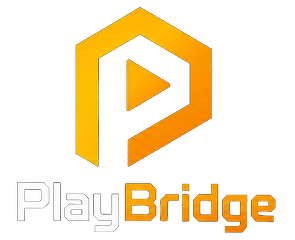

TERMOS DE USO DO PLAYBRIDGE Leia com atenção. Para instalar, é preciso aceitar estes termos. 1. O QUE É O PLAYBRIDGE O PlayBridge mostra na sua TV os vídeos e os jogos que já estão neste computador. Ele roda na sua casa, na sua rede: seus vídeos não são enviados para a internet. 2. SEU CONTEÚDO O PlayBridge só organiza e mostra o que você já tem. Ele não baixa filmes, séries nem jogos e não libera conteúdo protegido. Você é responsável por ter o direito de usar os vídeos e jogos que colocar nele. 3. O QUE O INSTALADOR FAZ NESTE COMPUTADOR - Instala o PlayBridge na pasta de programas do Windows. - Libera o PlayBridge no firewall, só para a rede da sua casa. - Faz o PlayBridge ligar junto com o computador. - Instala uma tela invisível (os jogos abertos pela TV ficam nela, sem aparecer nos seus monitores) e um controle virtual (o controle da TV funciona nos jogos do computador). - Prepara a placa de rede para a TV poder ligar o computador. Tudo isso é desfeito ao desinstalar o PlayBridge em Configurações > Aplicativos. Seus vídeos nunca são apagados. 4. LICENÇA Você pode instalar e usar o PlayBridge nos seus computadores e TVs, para uso da sua casa. Não é permitido revender, alugar ou distribuir o PlayBridge sem autorização. 5. NÚMEROS ANÔNIMOS DE USO Para saber se o PlayBridge está funcionando bem e quantas pessoas usam, o computador avisa a cada 6 horas, pela internet: um número sorteado nesta instalação (que não identifica você), a versão do PlayBridge, a versão do Windows, o tipo de TV e quantos jogos e vídeos foram usados. Não são enviados nomes, e-mails, nomes de arquivos, nomes de jogos, imagens nem o conteúdo dos vídeos. Na mesma hora, o PlayBridge recebe avisos da nossa equipe (por exemplo, sobre uma versão nova). 6. GARANTIA O PlayBridge é entregue como está. Fazemos o possível para que tudo funcione, mas não garantimos que funcione com todo computador, TV, jogo ou loja de jogos. 7. PROGRAMAS DE TERCEIROS INCLUÍDOS O PlayBridge usa programas livres de outros autores, cada um com a sua licença: - Sunshine (motor de transmissão dos jogos), da LizardByte - licença GPL versão 3. Código-fonte: https://github.com/LizardByte/Sunshine - Moonlight (base do app da TV), da equipe Moonlight Game Streaming - licença GPL versão 3. Código-fonte original: https://github.com/moonlight-stream/moonlight-android . O código-fonte da versão modificada que vai no app da TV do PlayBridge pode ser pedido a quem vendeu o PlayBridge para você, sem custo, por até 3 anos depois da compra. - Node.js - licença MIT. https://nodejs.org - FFmpeg - licença LGPL/GPL. https://ffmpeg.org - ViGEmBus (controle virtual), da Nefarius Software Solutions - licença BSD de 3 cláusulas. https://github.com/nefarius/ViGEmBus - Virtual Display Driver (tela invisível), de MikeTheTech - licença do autor. https://github.com/VirtualDrivers/Virtual-Display-Driver As licenças GPL garantem a você o direito de receber o código-fonte desses programas e de usá-los, estudá-los e compartilhá-los nos termos delas. Ao clicar em "Eu aceito o acordo", você concorda com estes termos.